MkDocs
关于MkDocs
- 概述
- 文档源文件写在Markdown，用一个单一的YAML配置文件配置；
- 完全静态HTML网站；
- 可选内置的主题:mkdocs和readthedocs,或在mkdocs wiki中的选择第三方主题,或建立自己的主题。
- 安装方式 - 可用Python安装pip，然后用pip安装MkDocs。
- Python版本 - MkDocs支持Python版本2.6,2.7,3.3,3.4,3.5。
安装Python
- 通过从python.org下载一个适合于系统的安装程序并运行它。如：Python2.7.
- 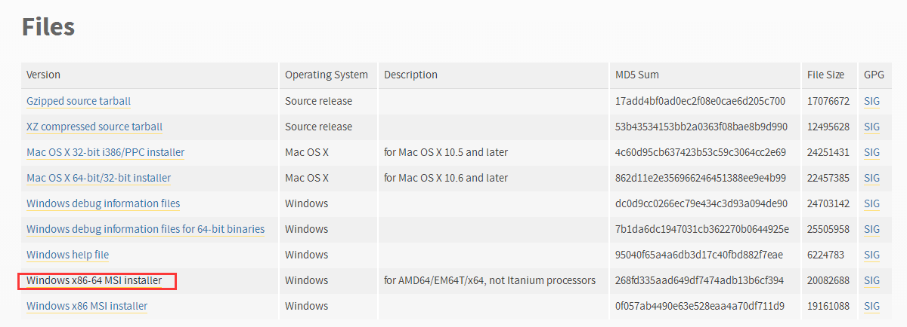
- PS：如果你在Windows上安装Python,一定要检查是否有Python添加到路径,如果安装程序提供了这样一个选项(默认是正常关闭)，安装时将此选项打开。
- 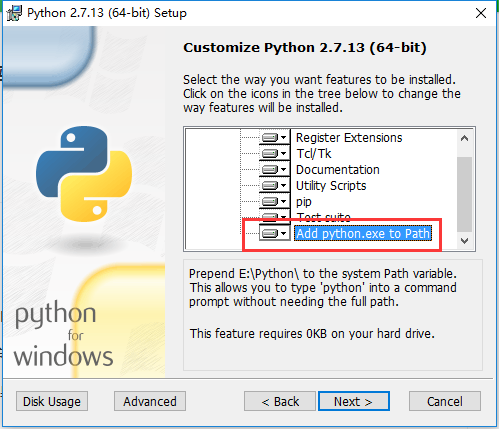
- 检查是否已安装python版本：
python --version - 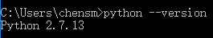
pip安装
- 如果您使用的是最新版本的Python,Python有可能是默认安装pip。
- 检查版本：
pip --version - 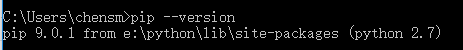
- 检查版本：
- 升级pip到最新版本:
pip install --upgrade pip- 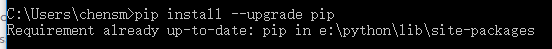
- PS：如果第一次安装pip，下载get-pip.py。然后运行下面的命令来安装它:
python get-pip.py
安装MkDocs
- 使用pip安装mkdocs，运行命令:
pip install mkdocs - 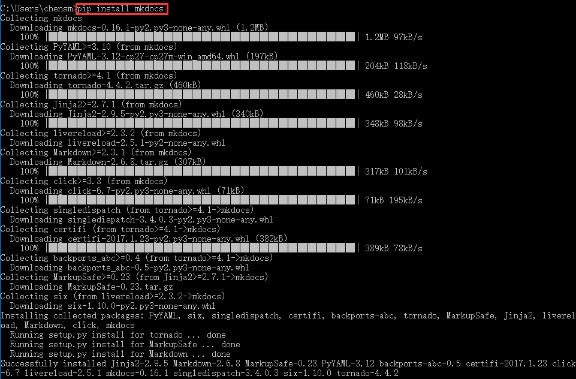
- 运行命令检查mkdocs版本：
mkdocs --version - 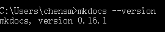
- 注意：
- 如果使用的是Windows，一些上面的命令可能不会工作，快速的解决方案可能是以
Python - m开始的每个如下的Python命令:python -m pip install mkdocspython -m mkdocs
- 作为一个永久的解决方案,您可能需要编辑你的包含Python安装的脚本目录的PATH环境变量。最新版本的Python包含一个脚本为你这样做。导航到您的Python安装目录(例如C:\Python34),打开工具,然后是脚本文件夹,通过双击运行win_add2path.py文件。或者,您可以下载该脚本并运行它(python win_add2path.py)。
- 如果使用的是Windows，一些上面的命令可能不会工作，快速的解决方案可能是以
开始
- 运行
- 创建一个Mkdocs项目：
mkdocs new my-project - 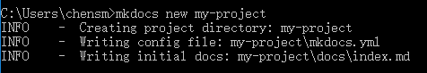
- 定位到该项目：
cd my-project - 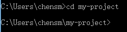
- 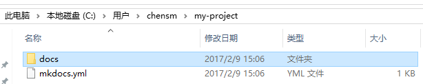
- 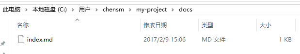
- 有一个名为mkdocs.yml简单配置文件和一个名为docs将包含你的文档源文件的文件夹。现在docs文件夹只包含一个名为index.md的文档页面。
- 创建一个Mkdocs项目：
- MkDocs带有一个内置的dev-server让你工作时预览文档。确保在和mkdocs.yml配置文件相同的目录中,然后通过运行mkdocs服务命令启动服务器:
- 打开该项目服务器：
mkdocs serve - 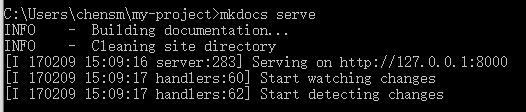
- 打开该项目服务器：
- 在浏览器中打开
http://127.0.0.1:8000,您将看到默认主页显示。- 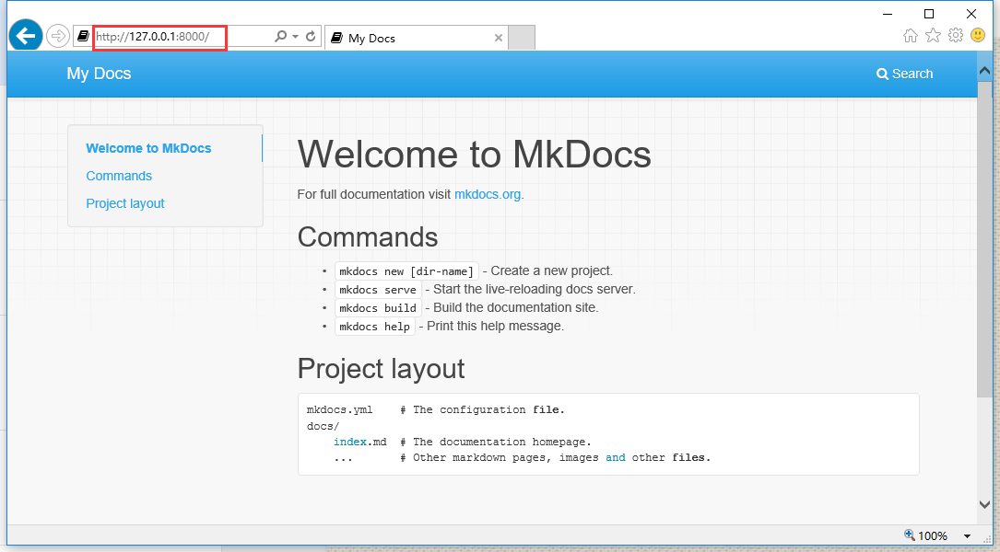
- dev-server还支持auto-reloading,并当配置文件、文档目录、主题目录在任何时候发生变化时重建你的文档。
- 在你选择的文本编辑器中打开docs/index.md文档,改变内容,并保存你的更改。浏览器会自动重载,你可立即看到你更新文档。
- 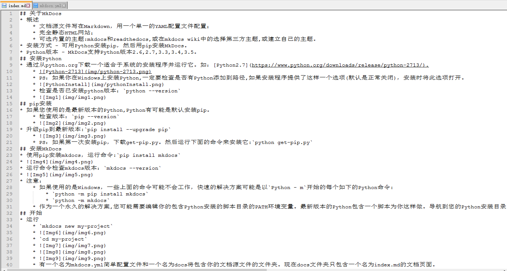
- 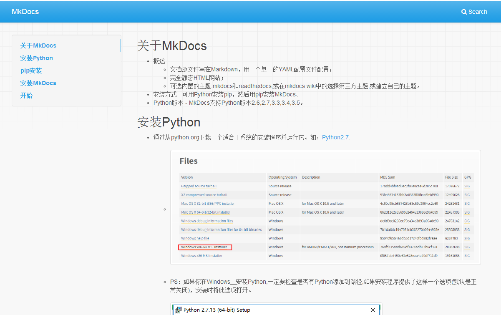
- 现在试着编辑配置文件:mkdocs.yml。更改MkLorum网站名称设置并保存文件。
site_name: MkLorum- 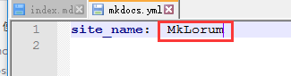
- （PS:
site_name:与MkLorum之间要有空格。）
- 浏览器应立即重新加载,你会看到你的新网站名称生效。
添加页面
site_name: MkDocs
pages:
- Home: index.md
- About: about.md
配置主题
- 可以在配置文件中修改文档主题. 在 mkdocs.yml 中添加
theme: readthedocs
站点生成
- 通过
mkdocs build命令生成文档，创建了一个site新目录。
- 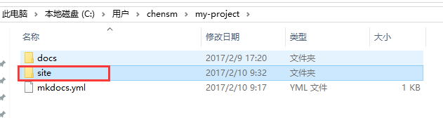
- 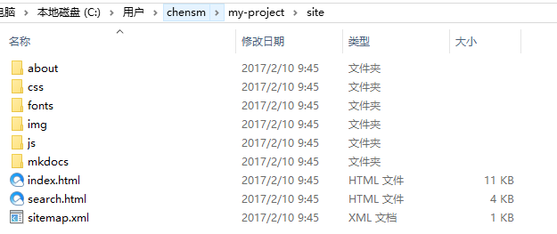
- 注意源码被分别输出为
index.html和about/index.html。主题中的其他文件也被复制到了site目录中。
- 一段时间后, 可能有文件被从源码中移除了, 但是相关的文档仍残留在
site目录中. 在构建命令中添加--clean参数即可移除这些文档:mkdocs build --clean.- 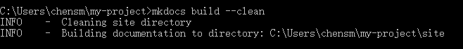
发布
- MkDocs 生成的文档只包含静态文件, 因此你可以将文档部署到任意地方. GitHub project pages 和 Amazon S3 是不错的选择. 只需上传
site目录到你需要发布的位置即可.
使用IIS时相关问题解决方案
- 浏览时由于权限不足而无法读取配置文件：
- 对根目录
site右击属性-安全，然后添加权限IUSR和IIS_IUSRS - 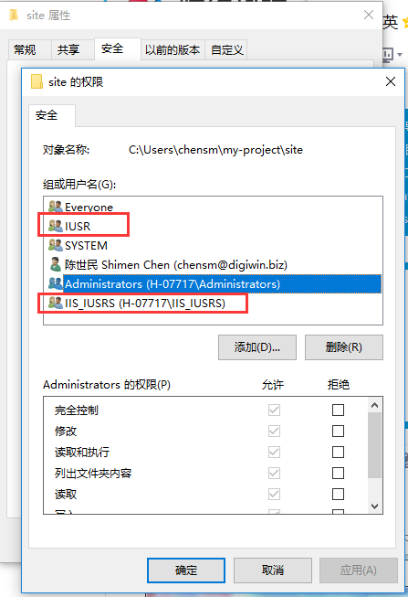
- 对根目录
- IIS映射问题导致
.mustache格式文件无法访问，解决方法: 定位到IIS安装目录cd C:\WINDOWS\system32\inetsrv输入命令C:\Windows\System32\inetsrv>appcmd set config /section:staticContent /+[fileExtension='.mustache',mimeType='text/plain']-
搜索功能不支持中文问题，解决方法如下：
安装目录
Python\Lib\site-packages\mkdocs\assets\search\mkdocs\js下重写lunr.min.js文件。
-
搜索功能不支持中文问题，解决方法如下：
安装目录